Resolución de triángulos rectángulos

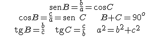
- Ejemplo 1:
 |
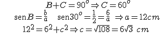 |
- Ejemplo 2:
| 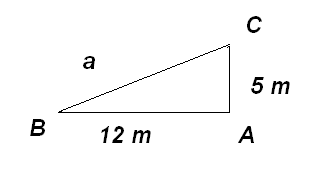 | 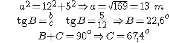 |
- Ejemplo 3: ¿Cuál es el ángulo de una pendiente del 100%?
| 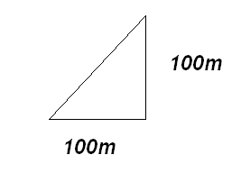 | 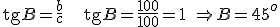 |
- Ejemplo 4: Un poste se encuentra en medio de un campo plano y nivelado. A 50 m de su base, un observador mide el ángulo a la punta del poste y obtiene 48°. ¿Qué altura tiene el poste?
| 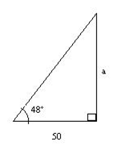 |
Si a denota la altura del poste Entonces a / 50 = tg 48°→ a = 50 tg 48° ≈55,5 m |
- Ejemplo 5: Calcula la altura de un árbol sabiendo que, desde un punto en el suelo, la cima se ve con un ángulo de 30˚, y 10 m más cerca, se ve con un ángulo de 60°.
| 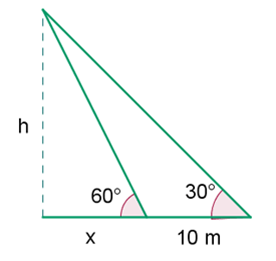 | 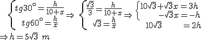 |
| 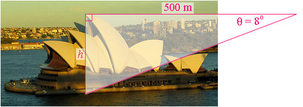 |
tg 8° = h/500 → h = 500 tg 8° = 70,27 m
Luego la altura es de unos 70 m
[La altura real es de 67,4 m]
- Ejemplo 7: El lado de un octógono regular es de 12 m. Encuentra los radios de las circunferencias inscrita y circunscrita.
| 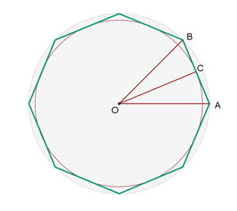 | 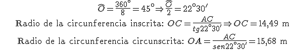 |
Ejercicios:
1.- El ángulo de elevación del Sol es de 35o. Calcula la longitud de la sombra de un hombre de 1,75 m de alto.
2.- Calcula la altura que alcanza una escalera de 4,5 m que está apoyada contra un muro, si el ángulo entre la escalera y el suelo es de 67o.
Soluciones: 1) 2,5 m; 2) 4,14 m
Obra publicada con Licencia Creative Commons Reconocimiento No comercial Compartir igual 3.0